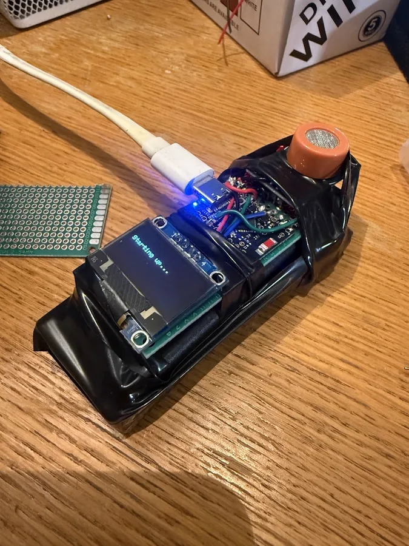

The Idea
We have all been there: you go out for just one drink, which turns into a few, and the next thing you know you wake up with a throbbing headache. Another scenario: you decide to pregame at a friend's place, hoping to both get a head start on the night out and save some money on drinks when you do end up in the city. However, it is often hard to know how much is best. The optimum ratio is a fine line where you have a good time without overdoing it. This was my main inspiration behind the breathalyser project. I wanted to create something that would measure the blood alcohol level in my breath right now and suggest how I should pace myself for the rest of the night. It should be small enough to fit into my pocket and easy to use.

Process
First, the sensor. There aren't a lot of cheap sensors that can measure alcohol in the breath. The easiest choice was the MQ-3 sensor. It is a metal oxide semiconductor with two circuits, a drive circuit which powers the heater running on 5V and a sensing circuit which runs on 3.3V. Depending on the concentration of alcohol in the air, the resistance drops. Thus by providing a current to this resistor and measuring the voltage drop across it, we are able to get a reading between 0 and 5V.
Next we need a microcontroller to run the thing. I chose the ESP32 because it's simple to build and integrate. There are several larger versions of this board, but I went for the XIAO ESP32-C3. The board can be soldered onto a PCB if I decide to expand on this project.
However, the MQ-3 sensor runs on 5V and the ESP32 runs on 3.3V. I used a simple voltage divider with two 10K ohm resistors to drop the voltage down to 3.3V.
Thereafter, we can move on to displaying the results. I used a small I2C OLED display. The ESP32, unlike ATmega boards, supports I2C on all available pins.
To power the entire thing, I used a 9V battery and a buck converter to drop the voltage down to 5V. I hope to replace both with a single 3.7V LiPo battery and a boost converter to boost the voltage up to 5V. This will make the entire thing smaller and more portable.
These were all tied together on a small strip of perf board. Then all that was left was to write the software.
Software
Everything runs from a single repeating function, loop() at src/main.cpp:207. Each
pass does four things in order:
- Read the sensor
- Check for serial commands
- Serve any web requests
- Redraw the screen
Reading the sensor without the noise
mq3Update() at src/mq3.cpp:42 is where the sensing is being done.
It does not over read. The first two lines check a timer and bail out if less than 50 ms has passed
(src/mq3.cpp:44). The loop runs a thousand times a second, but the sensor itself is only
read 20 times a second.
It takes 16 rapid readings (src/mq3.cpp:49-53), which cancels out
electrical noise. Then it blends that average into the previous value instead of replacing it
(src/mq3.cpp:59), so each reading is a little of the new and mostly the old. How much of each is a
setting exposed as Smoothing on the webpage. The default is set at 0.15 and can be changed to any value between 0 and 1. A higher number means more of the new reading is used, which makes the display more responsive but also more jumpy. A lower number means more of the old reading is used, which makes the display smoother but also slower to react.
Calibration: finding out what sober looks like
The calibration run is folded into that same 50 ms tick, at lines src/mq3.cpp:77-99. While it runs it adds each reading to a running total and tracks the highest and lowest values seen. When the timer expires it divides to get the average and saves that as the clean air reference (src/mq3.cpp:91-93).
The crux, indexing how you feel
src/feellog.cpp is the part that makes the thing personal. To every reading you are able to assign a number between 1 and 7, 1 meaning you don't feel that good and 7 meaning you feel amazing. This is then saved in memory with the timestamp (src/feellog.h:12-17).
Storage is a fixed 48 slots, 480 bytes in total (src/feellog.h:8).
feelPredict() at src/feellog.cpp:97 turns those ratings into a prediction. It
averages your scores for each band and estimates between them. The important part is lines
src/feellog.cpp:111-113: past either end of what you have actually logged it goes flat and stops.
It will not invent a prediction for territory that hasn't happened.
Predicting
handleProject() at src/portal.cpp:429 is where our previous assignments meet the prediction. For every reading it works out how much alcohol is still in the body using the standard Widmark formula, then steps forward in 10 minute increments out to three hours (src/portal.cpp:457).
At each future point it subtracts the alcohol the body will have cleared by then, converts what is left back
into a band, and checks the feeling index band for what it felt like (src/portal.cpp:462-465).
The hotspot and the web page
The web page is used to display the current status, change settings, calibrate the sensor, log how you feel and see the prediction. It is served from the ESP32 itself, which runs a small web server (src/portal.cpp:75).
src/portal.cpp:593-608 starts the device’s own hotspot, with the name built from the
chip’s hardware ID so every unit ends up unique. Lines src/portal.cpp:614-631 list the web
address for each feature: status, config, calibration, the feeling log and the projection.